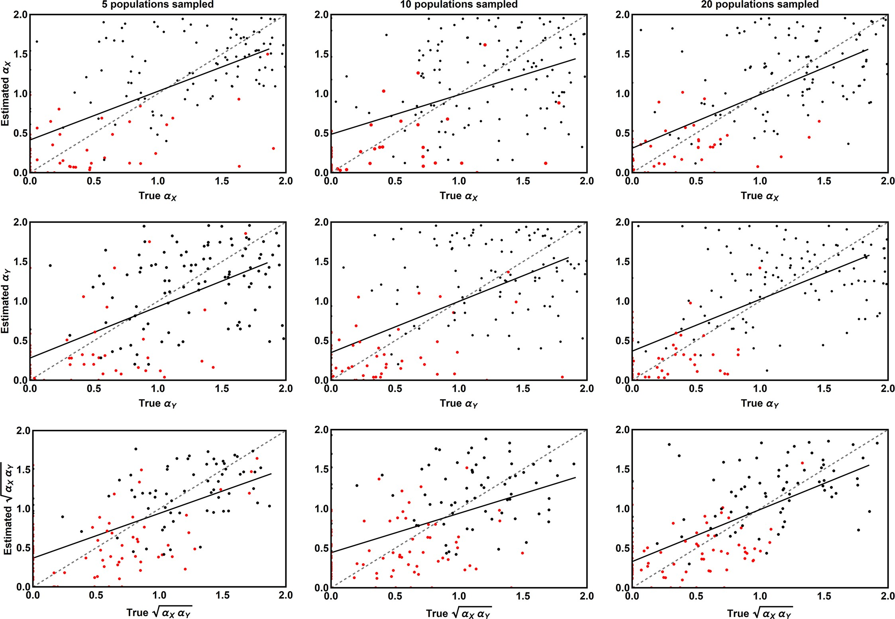
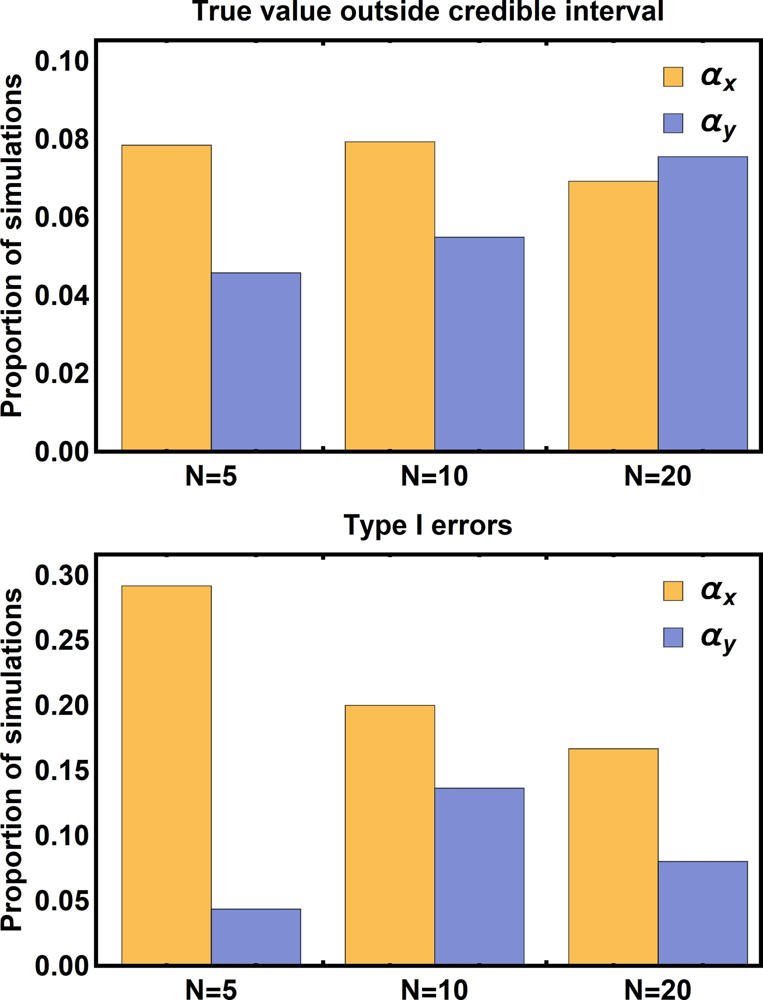
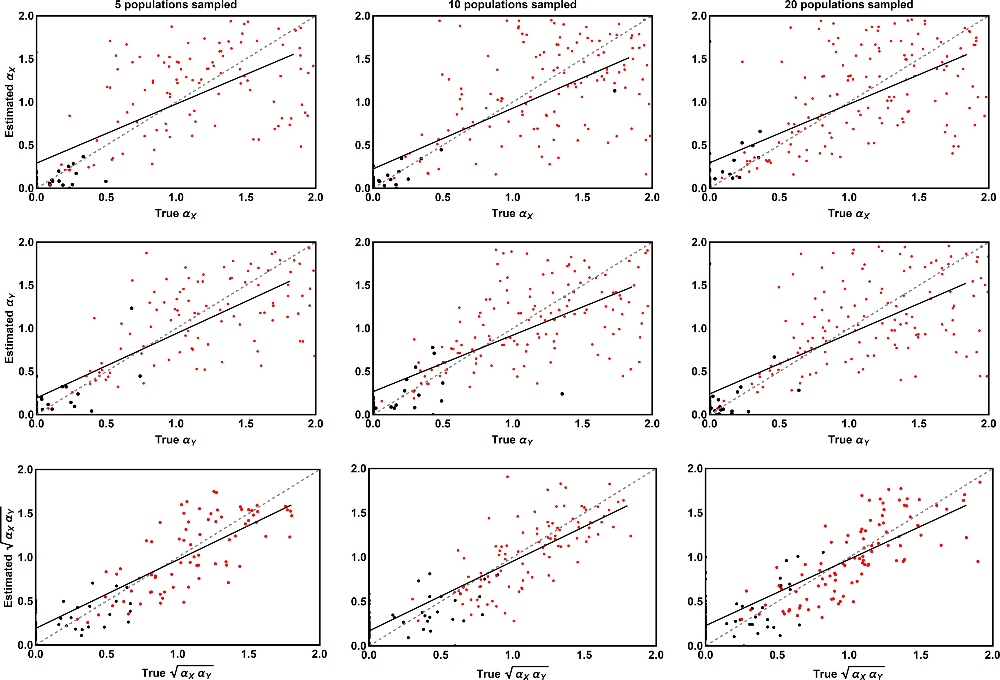
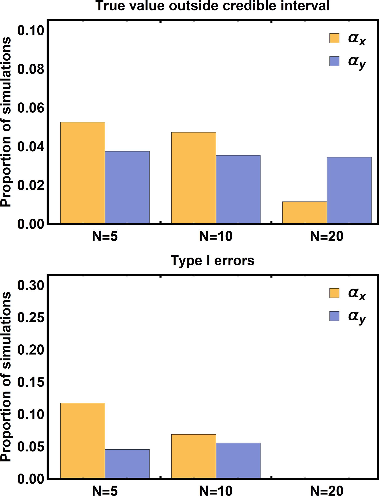
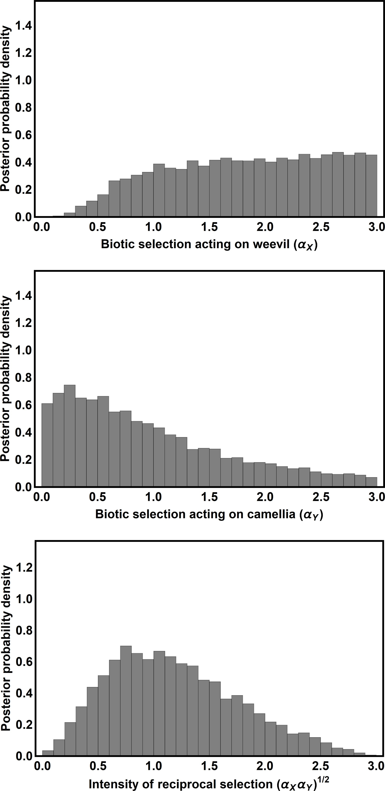
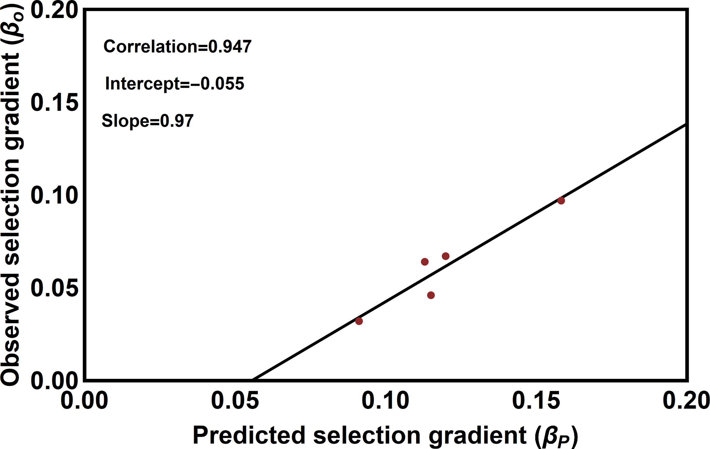

RESEARCH ARTICLE
Approximate Bayesian estimation of
coevolutionary arms races
Scott L. Nuismer 1,2
2
ID
*, Bob WeekID
1 Department of Biological Sciences, University of Idaho, Moscow, Idaho, United States of America,
2 Bioinformatics and Computational Biology, University of Idaho, Moscow, Idaho, United States of America
* snuismer@uidaho.edu
Abstract
a1111111111
a1111111111
Exaggerated traits involved in species interactions have long captivated the imagination of
a1111111111
evolutionary biologists and inspired the durable metaphor of the coevolutionary arms race.
a1111111111
Despite decades of research, however, we have only a handful of examples where recipro-
a1111111111
cal coevolutionary change has been rigorously established as the cause of trait exaggera-
tion. Support for a coevolutionary mechanism remains elusive because we lack generally
applicable tools for quantifying the intensity of coevolutionary selection. Here we develop an
approximate Bayesian computation (ABC) approach for estimating the intensity of coevolu-
OPEN ACCESS
tionary selection using population mean phenotypes of traits mediating interspecific interac-
Citation: Nuismer SL, Week B (2019) Approximate
tions. Our approach relaxes important assumptions of a previous maximum likelihood
Bayesian estimation of coevolutionary arms races.
PLoS Comput Biol 15(4): e1006988. https://doi.
approach by allowing gene flow among populations, variable abiotic environments, and
org/10.1371/journal.pcbi.1006988
strong coevolutionary selection. Using simulated data, we show that our ABC method accu-
Editor: Daniel B. Stouffer, University of Canterbury,
rately infers the strength of coevolutionary selection if reliable estimates are available for
NEW ZEALAND
key background parameters and ten or more populations are sampled. Applying our
Received: October 24, 2018
approach to the putative arms race between the plant Camellia japonica and its seed preda-
tory weevil, Curculio camelliae, provides support for a coevolutionary hypothesis but fails to
Accepted: March 29, 2019
preclude the possibility of unilateral evolution. Comparing independently estimated selection
Published: April 15, 2019
gradients acting on Camellia pericarp thickness with values simulated by our model reveals
Copyright: © 2019 Nuismer, Week. This is an open
a correlation between predicted and observed selection gradients of 0.941. The strong
access article distributed under the terms of the
agreement between predicted and observed selection gradients validates our method.
Creative Commons Attribution License, which
permits unrestricted use, distribution, and
reproduction in any medium, provided the original
author and source are credited.
Data Availability Statement: All relevant data are
Author summary
within the manuscript and its Supporting
Information files.
Exaggerated traits involved in species interactions, such as extreme running speeds in
predator and prey, have long captivated the imagination of evolutionary biologists and
Funding: Funding was provided by US National
inspired the durable metaphor of the coevolutionary arms race. Despite decades of
Science Foundation grant DEB 1450653 to SLN
(https://www.nsf.gov/div/index.jsp?div=DEB). The
research, however, we have only a handful of examples where coevolution has been rigor-
funders had no role in study design, data collection
ously established as the cause of trait exaggeration. The reason support for a coevolution-
and analysis, decision to publish, or preparation of
ary mechanism remains elusive is that we lack generally applicable tools for quantifying
the manuscript.
the intensity of coevolution. Here we develop a computational approach for estimating
Competing interests: The authors have declared
the intensity of coevolutionary selection (ABC Coevolution) and illustrate its use by
that no competing interests exist.
PLOS Computational Biology | https://doi.org/10.1371/journal.pcbi.1006988
April 15, 2019
1 / 21

Bayesian arms races
applying the method to a well-studied interaction between the plant Camellia japonica
and its seed predatory weevil, Curculio camelliae. Our results provide support for a coevo-
lutionary hypothesis but fail to preclude the possibility of unilateral evolution.
Introduction
Few metaphors have captured the interest of evolutionary biologists and ecologists more than
the coevolutionary arms race [1]. Whether between species, sexes, individuals, or genes, the
idea of perpetually and reciprocally escalating defenses and counter-defenses has inspired an
enormous amount of research [e.g., 2, 3–21]. As a result, we now have convincing evidence
that arms races occur both within and between species, at least in some well-studied cases.
What we know with much less certainty, however, is just how reciprocal, common, and intense
evolutionary arms races tend to be across the diversity of life as a whole.
Our overall understanding of evolutionary arms races is limited by existing approaches that
are labor intensive and that generally yield qualitative rather than quantitative estimates for
the strength of reciprocal selection. For instance, studies exploring arms races at the level of
genes often rely on classical population genetic tools that identify signatures of positive selec-
tion using ratios of synonymous to non-synonymous substitutions, patterns of linkage disequi-
librium, or shifts in the site frequency spectra [22, 23]. Although the results of such studies can
be consistent with a coevolutionary arms race (e.g., positive selection acting on putatively
interacting host and pathogen genes), the degree of reciprocity between the species cannot be
easily ascertained and alternative explanations for parallel positive selection are often plausible.
Similar issues plague studies investigating arms races at the phenotypic level. Such studies
often rely on fossil times series [24–26], the phylogenetic distribution of traits [13, 27, 28], or
relationships between traits over space/time [2, 19, 29–32]. As with the genetic approaches,
these phenotypic studies can provide evidence consistent with a coevolutionary arms race
(e.g., parallel patterns of trait escalation in the fossil record, correlated traits among popula-
tions, etc.), but are generally unable to quantify the extent of reciprocity or rule out alternative
explanations for parallel patterns of escalation in interacting species. Thus, we are currently in
a situation where we have tools that can be used to identify parallel patterns of genetic or phe-
notypic escalation in interacting species pairs, but few tools that can robustly estimate the
degree of reciprocal or coevolutionary selection underlying these patterns of parallel evolution-
ary change.
Recently, we developed a maximum likelihood approach that begins to fill this gap in the
toolkit available for investigating coevolutionary arms races [33]. This approach estimates the
strength of coevolutionary selection between a pair of interacting species using the spatial dis-
tribution of traits involved in the interaction. In addition to estimating the strength of coevolu-
tionary selection, this approach opens the door to likelihood ratio tests that allow the relative
support for coevolutionary and non-coevolutionary hypotheses to be evaluated. Although fast
and efficient, this method relies on a handful of important assumptions. Specifically, this
approach assumes interactions do not depend too strongly on the traits of the interacting indi-
viduals. In addition, the maximum likelihood approach ignores gene flow among populations
and assumes random genetic drift is the only force generating phenotypic diversity among
populations.
Here we develop a complementary Bayesian approach (ABC Coevolution) that relaxes key
restrictions of the maximum likelihood framework by allowing for strong coevolutionary
selection, gene flow among populations, and environmental variation in abiotic optima.
PLOS Computational Biology | https://doi.org/10.1371/journal.pcbi.1006988
April 15, 2019
2 / 21

Bayesian arms races
Although we restrict our attention to interactions between species, the general methodology
developed here could be applied to arms races between the sexes with only very minor modifi-
cations. Extending our approach to other forms of ecological interaction (e.g., mutualism) or
different functional forms of interaction (e.g., trait matching) is equally straightforward. We
will begin by developing a model that simulates coevolution between a pair of interacting spe-
cies distributed across a landscape; these simulations will power our ABC framework. Next, we
will evaluate the performance of our ABC approach using simulated data. Finally, we will
apply our ABC method to a well-studied, but putative, example of a coevolutionary arms race
between a seed boring weevil and its plant prey [34].
Methods
We focus on the common scenario where the outcome of an interaction between species X
and species Y depends on the mechanistic interaction between a pair of quantitative traits, x
and y. For instance, in the interaction between the Japanese Camellia, Camellia japonica, and
its seed predatory weevil, Curculio camelliae, the probability of seed predation depends on the
size of the weevil’s rostrum relative to the thickness of the Camellia fruit’s defensive pericarp
[34]. Similarly, the outcome of interaction between the newt, Taricha granulosa, and its garter
snake predator, Thamnophis sirtalis, depends on the amount of tetrodotoxin produced by the
newt relative to the detoxification ability of the snake [35]. The approach we develop here
requires that the population mean values of these key traits, �
x and �y, be estimated in N differ-
ent populations, as has been done in a wide range of systems [e.g., 2, 35, 36, 37–40]. Our
approach then summarizes the data using five statistics: 1) the average population mean phe-
notype in each species over all sampled populations (μx, μy), 2) the standard deviation in popu-
lation mean phenotypes among all sampled populations (σx, σy), and 3) the correlation
between the population mean phenotypes of the two species over all sampled populations
(ρxy). With this data in hand, our approach employs approximate Bayesian computation [e.g.,
41, 42–44] to develop posterior distributions for the strength of coevolution between the inter-
acting species pair. We begin by describing the evolutionary simulations that power our ABC
approach. Next, we describe how these evolutionary simulations are integrated into an approx-
imate Bayesian framework and then describe how we evaluate the performance of the
approach using simulated data. Finally, we demonstrate how our approach can be applied to
real data using the well-studied interaction between the seed boring weevil, Curculio camelliae,
and its host plant, Camellia japonica. All simulations and approximate Bayesian computation
were conducted in C++; the source code is available at: http://www.leeef.org/resources.
Coevolutionary simulation
We simulate coevolution between a pair of species that interact, and potentially coevolve,
within the N spatially distributed populations for which phenotypic data has been collected.
Specifically, we follow the population mean phenotypes of the two species within each of N
populations over the course of a generation consisting of: 1) selection, 2) random genetic drift,
3) gene flow, and finally 4) random mating and inheritance. We then repeat this life cycle for
one hundred generations, after which the life cycle continues until the summary statistics, μx,
μy, σx, σy, and ρxy reach an approximate equilibrium where the means change by less than 1%
of their values each generation and the standard deviations and correlation change by less than
5% of their values each generation, on average, over a ten generation window. Although a 5%
change in standard deviations or correlation may seem inconsistent with equilibrium, this
level of variation is consistent with sampling error given the relatively small number of popula-
tions we study here (i.e., < 20). In the sections that follow, we describe the details of each step
PLOS Computational Biology | https://doi.org/10.1371/journal.pcbi.1006988
April 15, 2019
3 / 21

Bayesian arms races
Table 1. Parameters, biological interpretations, and specific assumptions.
Parameter
Biological interpretation
Relevant assumptions
N
The number of populations sampled
Identical to number of populations in metapopulation
γi
Strength of stabilizing selection acting on species i
Spatially homogenous
θi,j
Phenotypic optimum favored by stabilizing selection acting on species i in
Spatially heterogeneous with mean μθ,i, variance s2 , and interspecific
y;i
population j
correlation ρθ
αi
Coevolutionary sensitivity of species i
Spatially homogenous
h2
Heritability of key trait in species i
Spatially homogenous
i
Vi
Phenotypic variance of key trait in species i
Fixed
mi
Rate of movement among populations in species i
Island model
ni
Effective population size of species i
Constant and spatially homogeneous
https://doi.org/10.1371/journal.pcbi.1006988.t001
of this life cycle, pointing out key assumptions along the way. All model parameters and their
biological interpretations and assumptions are summarized in Table 1.
Natural selection–We assume that individuals of species i inhabiting population j experi-
ence stabilizing selection toward some spatially variable phenotypic optimum, θi,j. Because cor-
relations between abiotic optima may lead to patterns similar to those produced by
coevolution [45, 46], we allow the phenotypic optima of the two species to be modestly corre-
lated across space, with correlations ranging between -0.1 and 0.1. For simplicity, we will refer
to this background selection as “abiotic” even though it may result from biotic interactions
external to the focal interaction, the abiotic environment, or some combination of both. Spe-
cifically, we assume that the abiotic fitness of the two species in population j is given by:
W
¼ exp½ g ðx
y Þ2�
ð1Þ
A;X;j
X
j
X;j
W
¼ exp½ g ðy
y Þ2�
A;Y;j
Y
j
Y;j
where γi is the strength of stabilizing selection acting on species i.
Selection imposed by the interaction between the focal species, X and Y, is assumed to
depend on their relative trait values. For simplicity and brevity, we refer to this as “biotic”
selection. Specifically, we assume that the fitness of an individual of species X with phenotype
x in an encounter with an individual of species Y with phenotype y is given by:
1
W
¼
ð2Þ
B;X;j
1 þ exp½ a ðx
y�
x
and the fitness of an individual of species Y with phenotype y in an encounter with an individ-
ual of species X with phenotype x is given by:
1
W
¼
B;Y;j
1 þ exp½ a ðy
x�
y
where the parameter αi measures the sensitivity of the biotic component of fitness in species i
within population j to the difference between the phenotypes of the individuals. These func-
tions assume a phenotypic differences or arms race model of interaction [e.g., 47] where indi-
vidual fitness is increased by having a phenotypic value that is large relative to that of the
interacting individual. For selection to be reciprocal and coevolutionary, αi>0 for both species
X and Y. Assuming encounters between individuals occur at random, Eq (2) can be used to
determine the expected fitness of individuals within each species by integrating over the
PLOS Computational Biology | https://doi.org/10.1371/journal.pcbi.1006988
April 15, 2019
4 / 21

Bayesian arms races
phenotype distribution of the interacting species:
R
1
�
W
¼
� ðyÞ dy
ð3Þ
B;X;j
1 þ exp½ a ðx
y� y;j
x
R
1
�
W
¼
� ðxÞ dx
B;Y;j
1 þ exp½ a ðy
x� x;j
y
where ϕx,j(x) and ϕy,j(y) are the phenotype frequency distributions for traits x and y, respec-
tively, within population j. These phenotype distributions are assumed to be normal, with
means �
x and �
y and variances VX and VY, respectively. For simplicity, we assume the pheno-
typic variances, VX and VY, are constant over space and time.
The total lifetime fitness of individuals is assumed to be the product of the abiotic and biotic
fitness components:
W
¼ W
�
W
ð4Þ
T;X;j
A;X;j
B;X;j
W
¼ W
�
W
T;Y;j
A;Y;j
B;Y;j
The mean fitness of each species can then be calculated by integrating total lifetime fitness
over the phenotype distribution of the focal species:
R
�
W
¼ W
� ðxÞ dx
ð5Þ
T;X;j
T;X;j
x;j
R
�
W
¼ W
� ðyÞ dy
T;Y;j
T;Y;j
y;j
Total lifetime fitness (4) and population mean fitness (5) can then be used together to pre-
dict the frequency distribution of phenotypes within each species and population following
selection:
W
�0 ðxÞ ¼ � ðxÞ
T;X;j
ð6Þ
x;j
x;j
�
W T;X;j
W
�0 ðyÞ ¼ � ðyÞ
T;Y;j
y;j
y;j
�
WT;Y;j
where the primes indicate the next step in the life-cycle. The post-selection population mean
phenotypes can then be calculated for each species and population by integrating the product
of the trait value and post-selection phenotype frequency (6):
R
�
x0 ¼ x �0 ðxÞdx
ð7Þ
j
x;j
R
�
y0 ¼ y �0 ðyÞdy
j
y;j
Random genetic drift–After selection, we assume a sample of individuals from species i
equal to the local effective population size, ni, survives. The population mean phenotypes after
this sampling process are then given by:
�
x00 ¼ �
x0 þ x
ð8Þ
j
j
x
�
y00 ¼ �
y0 þ x
j
j
y
PLOS Computational Biology | https://doi.org/10.1371/journal.pcbi.1006988
April 15, 2019
5 / 21

Bayesian arms races
where ξi is a random variable drawn from a gaussian distribution with mean zero and variance
equal to Vi/ni in species i.
Movement–We assume individuals move among populations at random, with the probabil-
ity of movement between pairs of populations in species i defined by the migration matrix M.
With this assumption, the population mean phenotype for species X in population j following
movement among populations is:
P
�
x000 ¼
N
m
�
x00
ð9Þ
j
k¼1
x;j;k k
and the population mean phenotype for species Y in population j following movement is:
P
�
y000 ¼
N
m
�
y00
j
k¼1
y;j;k k
In these expressions, mi,j,k represents the entry in the migration matrix, M, measuring the
probability an individual of species i moves from population k to population j. For the special
case of the island model we focus on here where gene flow occurs at an equal rate among all
populations, (9) reduces to:
m
P
�
x000 ¼ ð1
m Þ�
x00 þ
x
N
�
x00
ð10Þ
j
x
j
N
1
k ¼ 1 k
k 6¼ j
�
�
m
P
�
y000 ¼ 1
m �
y00 þ
y
N
�
y00
j
y
j
N
1
k ¼ 1 k
k 6¼ j
where mi is the proportion of individuals within each population composed of immigrants
from other populations and N is the number of populations for which phenotypic data is
available.
Random mating and inheritance–Following movement among populations, individuals
mate at random and reproduce. Assuming the traits mediating the interaction are heritable,
the change in the mean phenotype of species X and Y within population j is given by:
D�
x ¼ h2ð�
x000
�
x Þ
ð11Þ
j
x
j
j
D�
y ¼ h2ð�
y000
�
y Þ
j
y
j
j
where the heritability, h2, is assumed to be constant over both time and space.
i
Approximate Bayesian Computation
Approximate Bayesian Computation is a conceptually simple rejection algorithm that imple-
ments the following steps: 1) Draw parameters of the model from prior distributions, 2) Simu-
late data for the selected parameters and calculate summary statistics, 3) If the summary
statistics calculated from the simulated data are sufficiently close to their values in the real
data, include the parameters in the posterior distribution and return to Step 1. Otherwise, do
not include the parameters in the posterior distribution and return to Step 1. For well-chosen
summary statistics and appropriate thresholds for acceptance into the posterior, this algorithm
converges on an accurate approximation of the posterior distribution [48]. Approximate
Bayesian Computation has now been applied to a wide range of problems in ecology and evo-
lution, and its strengths and weaknesses are well-understood [41, 42, 49]. Here, we rely on pre-
vious work demonstrating that the bivariate distribution describing population mean
PLOS Computational Biology | https://doi.org/10.1371/journal.pcbi.1006988
April 15, 2019
6 / 21

Bayesian arms races
Table 2. Distributions for simulation parameters and prior distributions.
Model Parameter
Simulation Distribution
Prior Distribution
γi
Gamma (0.1,10)
Uniform (0, 0.2)
μθ,i
Gamma (5.0, 20.0)
Gamma (5.0, 20.0)
s2
Gamma(0.01×μ
y;i
θ,i, 1.5)
Gamma(0.01×μθ,i, 1.5)
ρθ
Uniform (-0.1, 0.1)
Uniform (-0.1, 0.1)
αi
Uniform (0.0, 2.0)1
Uniform (0.0, 2.0)
h2
Uniform (0.2, 0.8)
Uniform (0.2, 0.8)
i
Vi
1.0
1.0
mi
Gamma (0.001, 10.0)
Gamma (0.001, 10.0)
ni
Gamma (1000.0, 10.0)
Gamma (1000.0, 10.0)
1 When simulating data, αi was drawn from this distribution only after first clearing a hurdle value of 0.25. Failure to
clear the hurdle resulted in αi being equal to zero.
https://doi.org/10.1371/journal.pcbi.1006988.t002
phenotypes of coevolving species within a metapopulation can be accurately described using
only five statistical moments to select our summary statistics [46]. Specifically, we summarize
both simulated and real data using the average population mean phenotype of each species
over the metapopulation, μx and μy, the standard deviation of population mean phenotypes for
each species over the metapopulation, σx and σy, and the correlation between the population
mean phenotypes of the two species over the metapopulation, ρxy. If the values of these five
summary statistics are sufficiently similar in simulated and real data, the parameters generat-
ing the simulated data are added to the posterior distribution. The result is multivariate
posterior distribution for the 17 model parameters described in Tables 2 and 3. Detailed
descriptions of prior distributions and thresholds for acceptance into the posterior are
described in subsequent sections.
Results
Evaluating performance using simulated data
To evaluate the performance of our approach, we applied it to a large number of simulated
data sets. Specifically, we drew the parameters described in Table 1 at random and simulated
evolution within metapopulations consisting of 5, 10, and 20 populations. Each simulation
Table 3. Distributions for simulation parameters and refined prior distributions.
Model Parameter
Simulation Distribution
Prior Distribution
γi
Gamma (0.05, 5.0)
Gamma (γi, 200.0)
μθ,i
Gamma (5.0, 20.0)
Gamma (μθ,i, 500.0)
s2
Gamma (0.01�μ
, 1.5)
y;i
θ,i, 1.5)
Gamma (s2y;i
ρθ
Uniform (-0.1, 0.1)
Uniform (-0.1, 0.1)
αi
Uniform (0.0, 2.0)1
Uniform (0.0, 2.0)
h2
Uniform (0.2, 0.8)
Uniform (h2
0:1; h2 þ 0:1)
i
i
i
Vi
1.0
1.0
mi
Gamma (0.001, 10.0)
Gamma (mi, 100.0)
ni
Gamma (1000.0, 10.0)
Gamma (ni, 100.0)
1 When simulating data, αi was drawn from this distribution only after first clearing a hurdle value of 0.25. Failure to
clear the hurdle resulted in αi being equal to zero.
https://doi.org/10.1371/journal.pcbi.1006988.t003
PLOS Computational Biology | https://doi.org/10.1371/journal.pcbi.1006988
April 15, 2019
7 / 21

Bayesian arms races
assumed migration followed an island model and continued until the metapopulation reached
an approximate equilibrium where the statistical moments describing the multivariate distri-
bution of population mean phenotypes remained approximately constant over time. If an
equilibrium was not reached within 500 generations, the simulation was halted and parameters
drawn again at random. At the completion of each simulation, the summary statistics, μx, μy,
σx, σy, and ρxy were recorded. Once data had been simulated, we used our ABC method to
develop posterior distributions for the parameters in Table 1, focusing our assessment of accu-
racy on the coevolutionary sensitivity in each species, αi, and a composite index for the
pffiffiffiffiffiffiffiffi
strength of coevolution equal to
a a . We studied the performance of our method for two
x y
different scenarios. In the first, we assumed little independent biological information was
available to inform prior distributions of background parameters (e.g., rates of gene flow, effec-
tive population sizes, etc.) such that prior distributions for these parameters were broad and
restricted only by biological plausibility. In the second, we assumed independent biological
information (e.g., molecular studies, experiments, etc.) was available and could be used to
refine prior distributions for background parameters.
Unrefined priors–We first considered the power and performance of our method when
applied to a biological system where only the trait means of the interacting species are known
across populations. In such situations, prior distributions for the background parameters
required by our method are constrained only by biological intuition and plausibility. Conse-
quently, the modes of prior distributions could be very far from the actual parameters used to
generate simulated data. To evaluate performance under this worst-case scenario, prior distri-
butions were assumed to be identical to the distributions from which parameters used to simu-
late data were drawn with two exceptions. First, prior distributions for parameters defining the
strength of stabilizing selection (γx, γy) were assumed to follow uniform distributions informed
by meta-analyses [50, 51]. Second, distributions from which the coevolution parameters were
drawn for simulation differed from the prior distributions by including a “hurdle”. Specifically,
the simulations drew the coevolution parameters from uniform hurdle distributions that
enriched the probability of drawing parameters uniquely equal to zero. Using hurdle distribu-
tions allowed us to calculate Type I error rates for our method by guaranteeing “control” simu-
lations were performed where biotic selection was absent for one or both of the species. A
detailed description of the distributions used to draw parameters for the simulations and the
prior distributions can be found in Table 2.
For each simulated data set, the ABC method was run until 200 points were in the posterior
distribution. Although 200 points is far too few to achieve a reliable estimate for any individual
simulated data set, it allowed us to explore a much greater diversity of simulated data sets in a
reasonable amount of time. Because so few points were included in the posterior, it is likely
our results represent the worst-case scenario for the performance of our method. Later, when
we apply our method to real data, we vastly increase the number of points in the posterior.
Acceptance into the posterior distribution required that the spatial averages of population
mean phenotypes be within 0.1+15% of their observed values, that the spatial standard devia-
tions of population mean phenotypes be within 0.1+20% of their observed values, and that the
spatial correlation between population mean phenotypes be within 25% of its observed value.
These thresholds were chosen to balance the competing demands of acceptance rate and accu-
racy in a way that allowed us to explore the performance of our method over a large number of
simulated data sets. For each simulated data set, we calculated the estimated values for the
coevolutionary sensitivities, αi, by identifying the modes of their marginal posterior distribu-
ffiffiffiffiffiffiffi
p
ffi
tions. We also calculated a composite strength of coevolution,
a a , that integrates the coevo-
x y
lutionary sensitives of each species into a single numeric score. Ninety five percent credible
PLOS Computational Biology | https://doi.org/10.1371/journal.pcbi.1006988
April 15, 2019
8 / 21

Bayesian arms races
intervals were calculated for these quantities as the interval of highest posterior density (HPD)
in the marginal posterior distribution. Although relying on the marginal distributions for
these key parameters (rather than the full multivariate distribution) could, in principle, be
problematic, initial simulations suggested the posterior distributions for these key parameters
are approximately independent in most cases. Focusing on only the marginal distributions
allowed us to get more reliable estimates with fewer points in the posterior, and thus allowed
us to study a larger number of simulated data sets.
We applied our ABC method to 155 simulated data sets where 5 populations were sampled,
166 simulated data sets where 10 populations were sampled, and 162 simulated data sets where
20 populations were sampled. Performance was evaluated in two ways. First, we compared the
true values of the coevolutionary sensitivities to their values estimated by the modes of their
marginal posterior distributions (Fig 1). This comparison revealed that our method did a rea-
sonable job of estimating the coevolutionary sensitivities for each species, and the composite
strength of coevolutionary selection (Fig 1). Next, we calculated the percentage of cases in
which the true values of the coevolutionary sensitivities fell outside their 95% credible intervals
(Fig 2). This demonstrated that the error rates of our estimates were slightly inflated, with
between 4%-8% of estimates lying outside the 95% credible interval (Fig 2). Similarly, analysis
of Type I error rates demonstrated positive values of the coevolutionary sensitivities were erro-
neously inferred in between 4%-30% of cases, although when twenty populations were sam-
pled the Type I error rates fall to more reasonable values between 8%-17%.
Refined priors–In some cases, such as the Camellia-Weevil interaction we will apply our
method to in the next section, independent estimates for background parameters are avail-
able, allowing for increased refinement of prior distributions. We studied such scenarios by
centering the prior distributions for the background parameters on the values used to gen-
erate the simulated data (Table 3). This analysis proceeded identically to that described in
the previous section except that the method was tested using 136 simulated data sets with 5
populations sampled, 172 simulated data sets with 10 populations sampled, and 177 simu-
lated data sets with 20 populations sampled. Not surprisingly, when background parameters
have been estimated independently and accurately, the performance of our method is sub-
stantially improved (Figs 3 and 4). Specifically, sampling from ten or more populations now
guarantees the true values of the coevolutionary sensitivities reside within their 95% credi-
ble intervals in at least 95% of simulations as desired (Fig 4). Similarly, as long as ten or
more populations are sampled, the Type I error rates for the coevolutionary sensitivities
remain below 5% (Fig 4).
Application: Armament escalation between plant and seed predator
The interaction between the Japanese camellia, Camellia japonica, and its obligate seed preda-
tor, Curculio camelliae, is a textbook example of a coevolutionary arms race [34]. Japanese
camellias defend against weevil attack using a thickened pericarp that defends the seeds inside
from the weevil’s attempts to drill through the defensive pericarp using its elongated rostrum.
Key features of this interaction include striking exaggeration of the traits mediating the inter-
action (rostrum length in the weevil and pericarp thickness in the camellia) and a strong statis-
tical association between plant and weevil traits over the geographic range of the interaction.
Through a lengthy series of field studies, elegant experiments, and genetic work, coevolution
has been established as the most likely explanation for these unusual features of the interaction
[32, 52–55]. Despite the extensive research effort devoted to this system, however, we lack
quantitative estimates for the strength of coevolution, other than those we have recently
derived using maximum likelihood (Week and Nuismer, 2019). In this section, we apply our
PLOS Computational Biology | https://doi.org/10.1371/journal.pcbi.1006988
April 15, 2019
9 / 21


Bayesian arms races
Fig 1. The relationship between the coevolutionary sensitivities used to simulate data (X axis) and the values of these parameters estimated by our ABC method (Y
axis) for scenarios where independent estimates of background parameters are unavailable, necessitating the use of relatively broad prior distributions. The left-
hand column shows results for cases where only 5 populations have been sampled, the center column cases where 10 populations have been sampled, and the right column
cases where 20 populations have been sampled. Red points indicate parameter estimates for which the associated credible interval did not include zero. Black points
indicate parameter estimates with credible intervals overlapping zero. The solid black line is the best linear fit and the dashed gray line is the perfect one to one
relationship expected if all estimates were equal to their true values.
https://doi.org/10.1371/journal.pcbi.1006988.g001
ABC method to this system, capitalizing on the extensive body of existing research to define
prior distributions for key background parameters.
Trait data–The phenotypic data we analyze comes from studies of this interaction that esti-
mated population mean pericarp thickness and population mean rostrum lengths across 17
populations in Japan [34]. Because our method assumes an island model of migration, we
restricted our analysis to the subset of these populations that formed a single cluster within
population genetic analyses [56]. This resulted in a final data set consisting of estimates for
population mean phenotypes in 13 populations (S1 Table).
Prior distributions–Previous research in this system provides a solid grounding for prior
distributions of most background parameters. For instance, effective population sizes (ni) and
rates of gene flow (mi) have been estimated for both camellia and weevil [54, 55]. Heritability
(h2) has been estimated for pericarp thickness directly [53] and can be at least crudely guessed
i
and bounded for rostrum length using estimates for related species [54]. The phenotypic
PLOS Computational Biology | https://doi.org/10.1371/journal.pcbi.1006988
April 15, 2019
10 / 21


Bayesian arms races
Fig 2. The proportion of simulations where the true value of the parameter fell outside of the 95% credible interval of its posterior
distribution (top panel) and the proportion of simulations where the true value of the parameter was equal to zero, but the credible
interval did not include zero (bottom panel). Inference was performed using very broad priors restricted only by biological
feasibility.
https://doi.org/10.1371/journal.pcbi.1006988.g002
PLOS Computational Biology | https://doi.org/10.1371/journal.pcbi.1006988
April 15, 2019
11 / 21


Bayesian arms races
Fig 3. The relationship between the coevolutionary sensitivities used to simulate data (X axis) and the values of these parameters estimated by our ABC method
(Y axis) for scenarios where prior distributions for background parameters have been refined using independent estimates. The left-hand column shows results for
cases where only 5 populations have been sampled, the center column cases where 10 populations have been sampled, and the right column cases where 20 populations
have been sampled. Red points indicate parameter estimates for which the associated credible interval did not include zero. Black points indicate parameter estimates
with credible intervals overlapping zero. The solid black line is the best linear fit and the dashed gray line is the perfect one to one relationship expected if all estimates
were equal to their true values.
https://doi.org/10.1371/journal.pcbi.1006988.g003
optima favored by stabilizing selection (μθ,i) can also be estimated independently from previ-
ous work. Specifically, the optimum trait value for the weevil can be at least crudely estimated
using rostrum lengths of male weevils, because male weevils do not use their rostra in interac-
tions with the plant [53]. Thus, as long as male and female rostrum lengths are not genetically
correlated (or the population is at equilibrium), male rostrum length should serve as a reason-
able proxy for the optimum rostrum length in the absence of interaction with the Camellia.
Unfortunately, the optimum trait value for the camellia must be estimated using populations
outside the range of the weevil, and such estimates could easily be confounded by spatial varia-
tion [53]. Consequently, we use rather broad parameters for these parameters to capture this
uncertainty. Similarly, the spatial variance in these phenotypic optima can be crudely esti-
mated as the variance in rostrum length in male weevils from different populations and the
variance in pericarp thickness from different populations outside the range of the weevil [53].
Phenotypic variance (Vi) can be estimated for each species by averaging the within population
phenotypic variance for each trait over all thirteen populations included in our analysis.
PLOS Computational Biology | https://doi.org/10.1371/journal.pcbi.1006988
April 15, 2019
12 / 21


Bayesian arms races
Fig 4. The proportion of simulations where the true value of the parameter fell outside of the 95% credible interval of its posterior
distribution (top panel) and the proportion of simulations where the true value of the parameter was equal to zero, but the credible
interval did not include zero (bottom panel). Inference was performed assuming independent estimates for background parameters
were available, allowing narrower prior distributions to be used than in Fig 2.
https://doi.org/10.1371/journal.pcbi.1006988.g004
PLOS Computational Biology | https://doi.org/10.1371/journal.pcbi.1006988
April 15, 2019
13 / 21

Bayesian arms races
Unfortunately, the strengths of stabilizing selection (γi) have not been independently esti-
mated, forcing us to rely on broad priors for these parameters informed only by previous
meta-analyses of the strength of stabilizing selection across studies and taxonomic groups [50,
51]. Prior distributions for all model parameters are described in Table 4.
Posterior distributions and coevolutionary inference–The ABC algorithm was run until
there were 7,513 points in the posterior distribution, using acceptance thresholds somewhat
more restrictive than those used in method performance evaluations. Specifically, parameter
combinations were passed to the posterior distribution only when the spatial average popula-
tion mean phenotypes were within 1.120mm and 0.887mm of their values in the empirical
data for weevil and camellia, respectively, the standard deviations among population mean
phenotypes were within 0.327mm and 0.553mm of their values for weevil and camellia, and
the correlation between weevil and camellia mean phenotypes was within 0.224 of its value in
the data. The modal values of the coevolutionary sensitivities were then identified, as were
their 95% credible intervals (HPD). Posterior distributions are reported in Fig 5. The results
demonstrate that the mode for weevil coevolutionary sensitivity (αW) is equal to 2.37 with a
95% credible interval between 0.60 and 2.94. Thus, our results support the idea that Camellia
pericarp thickness exerts selection on weevil rostrum length. For the Camellia, our results
demonstrate the mode for Camellia coevolutionary sensitivity (αC) is equal to 0.21 with a 95%
credible interval between 0 and 2.40. Thus, our results are consistent with the hypothesis that
weevil rostrum length exerts selection on Camellia pericarp thickness, but cannot rule out the
possibility that pericarp thickness evolves independently of weevil rostrum length. In sum-
mary, the results of our ABC analysis point to reciprocal selection and coevolution as the most
likely scenario, but do not preclude the possibility that evolution is unilateral, with weevil ros-
trum length tracking independently evolving Camellia pericarp thickness.
Validation against independent estimates of selection– Although estimates of population
mean phenotypes are not available from enough populations for standard methods of cross-
validation to be useful [e.g., 57], previous work estimating selection gradients acting on peri-
carp thickness within a number of populations [34] allows independent validation of our esti-
mates for the coevolutionary sensitivities. Specifically, using the coevolutionary sensitivities
estimated by our ABC method, we can predict the standardized biotic selection gradient for
any population where trait means are known. Applying this approach to the five populations
for which significant selection gradients acting on pericarp thickness have been previously
reported [34] resulted in a correlation of 0.97 between predicted and observed values (Fig 6).
Although strongly correlated, our simulated selection gradients consistently overestimated val-
ues measured directly from the data. This discrepancy may arise because our mathematical
Table 4. Prior distributions for camellia and weevil parameters.
Model Parameter
Weevil Distribution
Camellia Distribution
γi
Gamma (0.05, 2.0)
Gamma (0.05, 2.0)
μθ,i
Gamma (5.912, 8.0)
Gamma (6.248, 8.0)
s2
Gamma (0.15, 1.05)
Gamma (1.27, 1.3)
y;i
ρθ
Uniform (-0.1, 0.1)
αi
Uniform (0.0, 3.0)
Uniform (0.0, 3.0)
h2
Uniform (0.312, 0.512)
Uniform (0.6375, 0.8375)
i
Vi
Gamma (0.71, 50.0)
Gamma (3.72, 50.0)
mi
Gamma (3.07×10−6, 2.0)
Gamma (1.00×10−6, 2.0)
ni
Gamma (30870, 200.0)
Gamma (1818, 100.0)
https://doi.org/10.1371/journal.pcbi.1006988.t004
PLOS Computational Biology | https://doi.org/10.1371/journal.pcbi.1006988
April 15, 2019
14 / 21


Bayesian arms races
PLOS Computational Biology | https://doi.org/10.1371/journal.pcbi.1006988
April 15, 2019
15 / 21


Bayesian arms races
Fig 5. Posterior probability densities for weevil coevolutionary sensitivity (top panel), camellia coevolutionary
sensitivity (middle panel), and the composite index of reciprocal selection (bottom panel). Modal values were 2.37,
0.21, 0.81 respectively, and 95% credible intervals were {0.60, 2.94}, {0, 2.40}, {0.15, 2.20} respectively.
https://doi.org/10.1371/journal.pcbi.1006988.g005
model fails to capture some of the nuanced functional relationship between weevil rostrum
length and camellia pericarp thickness. It is also possible, however, that this apparent discrep-
ancy is nothing more than noise stemming from the small sample sizes used in the empirical
study and the small number of populations for which significant estimates of selection are
available. Resolving this apparent discrepancy will require data from a larger number of popu-
lations and exploration of alternative mathematical formulations. As a whole, however, we
take the general agreement between our predicted selection gradients and those directly and
independently estimated through phenotypic selection analysis as support for the validity of
our approach.
Discussion
We have developed an approximate Bayesian methodology (ABC Coevolution) for estimating
the strength of coevolutionary selection using the spatial distribution of trait means. Our
approach relaxes key assumptions of an existing maximum likelihood technique and performs
reliably when population mean trait values are sampled from ten or more populations and
independent information is available to refine prior distributions for background parameters.
Specifically, when priors are broad and informed only by biological plausibility, the true values
of the coevolutionary sensitivities lie outside of their 95% credible intervals in up to 8% of
Fig 6. Standardized biotic selection gradients acting on pericarp thickness predicted by our ABC method plotted against
their independently measured values. Predicted selection gradients were calculated for the five populations for which Toju
and Sota [34] reported significant selection gradients and which belonged to a single clade. Predicted selection gradients were
calculated by conducting a simulated phenotypic selection analysis in each population based on the modal parameter values
of the posterior distributions.
https://doi.org/10.1371/journal.pcbi.1006988.g006
PLOS Computational Biology | https://doi.org/10.1371/journal.pcbi.1006988
April 15, 2019
16 / 21

Bayesian arms races
simulated data sets (Fig 2). In contrast, when independent estimates of background parameters
can be used to refine priors, the true values of the coevolutionary sensitivities lie outside their
95% credible interval in fewer than 5% of cases, as long as 10 or more populations are sampled
(Fig 4). Applying our method to the well-studied interaction between the plant, Camellia
japonica, and its seed predator, Curculio camelliae, provides support for the hypothesis of a
coevolutionary arms race between armament and defense, but fails to unequivocally rule out
the possibility of unilateral trait escalation.
Comparing the estimates for coevolutionary selection in the C. camellia–C. japonica derived
here with those we previously derived using a maximum likelihood approach (Week and Nuis-
mer, 2019) reveals qualitative similarity (i.e., coevolution is the best supported hypothesis) but
quantitative discrepancy. Specifically, the estimates of coevolutionary selection we derive here
are much larger than those inferred using maximum likelihood, even after transforming the
previous estimates to the same scale of measurement. There are at least three reasons the ABC
approach infers a greater magnitude of coevolutionary selection than the maximum likelihood
approach. First, the two approaches assume different functional forms of interaction between
the species. Second, the maximum likelihood approach assumes only random genetic drift
generates spatial variation in trait means. Because drift is a weak force in all but the smallest of
populations, spatial variation can be maintained only when stabilizing selection and coevolu-
tionary selection are also very weak. If this were not the case, stabilizing and coevolutionary
selection would overwhelm drift and erode spatial variation. By allowing the optimal trait val-
ues favored by stabilizing selection to vary across space, the ABC approach avoids this trap and
can maintain spatial variation even when stabilizing and coevolutionary selection become
strong. Third, the maximum likelihood approach assumes the outcome of interactions does
not depend too strongly on the traits of the interacting individuals, allowing analytical approx-
imations for evolutionary change to be derived. Although mathematically convenient, this
assumption guarantees the maximum likelihood approach will underestimate the true magni-
tude of coevolutionary selection. In contrast, the ABC approach developed here avoids this
assumption by relying on brute force simulation and so can return estimates of coevolutionary
selection that are much greater in magnitude. In short, the maximum likelihood approach is
faster and more computationally efficient but will underestimate the strength of coevolution-
ary selection in cases where its true value is strong.
Although the Bayesian approach we develop here relaxes several important assumptions of
our earlier maximum likelihood approach (e.g., weak coevolutionary selection, absence of
gene flow, spatially homogenous abiotic optima), it still makes important assumptions that
may not be satisfied in all systems. For instance, as currently implemented, our approach does
not allow the strength of coevolutionary selection to vary over space, and thus ignores the
potential for selection mosaics [58–60]. An obvious, and relatively straightforward, extension
of the Bayesian methodology developed here would include such selection mosaics. However,
initial explorations of this possibility suggested accurate inference will require sampling trait
means from many more populations than what is generally available, even in very well-studied
interactions like those between C. camellia and C. japonica. In addition, just as with our previ-
ous likelihood-based method, the approach developed here assumes the metapopulation has
reached an evolutionary equilibrium, at least with respect to the statistical moments we use as
summary statistics. In cases where time series information on traits is available, or it is possible
to establish times of divergence, developing non-equilibrium approaches may offer promising
alternatives. Our approach also relies upon the temporal constancy of key parameters such as
heritabilities, phenotypic variances, abiotic optima, and strengths of stabilizing and coevolu-
tionary selection. Although allowing these parameters to vary over time is relatively straight-
forward from a programming/computational standpoint, doing so seems wildly premature
PLOS Computational Biology | https://doi.org/10.1371/journal.pcbi.1006988
April 15, 2019
17 / 21

Bayesian arms races
given we lack sufficient data to establish even ballpark priors for how these parameters change
over time in natural systems. Finally, we focus here on the special case of an island model
where gene flow occurs equally among all populations. Extending our approach to cases that
generate isolation by distance, such as stepping stone models, will allow application to a
broader range of biological systems.
In summary, we have presented a novel Bayesian methodology for estimating the strength
of coevolutionary selection driving putative arms races between pairs of interacting species.
Although we have restricted our attention to arms races between species, adapting our
approach to arms races within species, such as putative cases of runaway sexual selection or
conflict between sexes or groups within a species [e.g., 15, 61, 62], is a straightforward matter.
Similarly, adapting our approach to other forms of ecological interactions such as mutualism
or competition or to other mechanisms such as phenotype matching, is extremely straightfor-
ward and requires only minor modifications to the source code. Implementing these and other
options in our inference package (ABC coevolution) will be a central goal of future develop-
ment. Broad application of the approach developed here provides an opportunity to better
understand the distribution of coevolutionary selection across interactions, communities, and
ecosystems, and to answer long-standing debates such as the importance of reciprocity in the
evolutionary process [63, 64].
Supporting information
S1 Table. Trait data for Camellia japonica and Curculio camelliae. Taken from Table 1 in
Toju and Sota (2006a).
(DOCX)
Author Contributions
Conceptualization: Scott L. Nuismer.
Formal analysis: Scott L. Nuismer.
Funding acquisition: Scott L. Nuismer.
Investigation: Scott L. Nuismer, Bob Week.
Methodology: Scott L. Nuismer.
Project administration: Scott L. Nuismer.
Software: Scott L. Nuismer.
Supervision: Scott L. Nuismer.
Validation: Scott L. Nuismer, Bob Week.
Writing – original draft: Scott L. Nuismer.
Writing – review & editing: Scott L. Nuismer, Bob Week.
References
1.
Dawkins R, Krebs JR. Arms races between and within species. Proceedings of the Royal Society Series
B-Biological Sciences. 1979; 205(1161):489–511. https://doi.org/10.1098/rspb.1979.0081 WOS:
A1979HN99900005. PMID: 42057
2.
Benkman CW, Parchman TL, Favis A, Siepielski AM. Reciprocal selection causes a coevolutionary
arms race between crossbills and lodgepole pine. American Naturalist. 2003; 162(2):182–94. https://
doi.org/10.1086/376580 WOS:000184446500005. PMID: 12858263
PLOS Computational Biology | https://doi.org/10.1371/journal.pcbi.1006988
April 15, 2019
18 / 21
Bayesian arms races
3.
Brodie ED, Feldman CR, Hanifin CT, Motychak JE, Mulcahy DG, Williams BL, et al. Parallel arms races
between garter snakes and newts involving tetrodotoxin as the phenotypic interface of coevolution.
Journal of Chemical Ecology. 2005; 31(2):343–56. https://doi.org/10.1007/s10886-005-1345-x
WOS:000227444700009. PMID: 15856788
4.
Carrillo-Bustamante P, Kesmir C, de Boer RJ. A Coevolutionary Arms Race between Hosts and Viruses
Drives Polymorphism and Polygenicity of NK Cell Receptors. Molecular Biology and Evolution. 2015;
32(8):2149–60. https://doi.org/10.1093/molbev/msv096 WOS:000360586500019. PMID: 25911231
5.
Coffin JM. Virions at the Gates: Receptors and the Host-Virus Arms Race. Plos Biology. 2013; 11(5).
https://doi.org/10.1371/journal.pbio.1001574 WOS:000319669800008. PMID: 23723739
6.
de Castro ECP, Zagrobelny M, Cardoso MZ, Bak S. The arms race between heliconiine butterflies and
Passiflora plants—new insights on an ancient subject. Biological Reviews. 2018; 93(1):555–73. https://
doi.org/10.1111/brv.12357 WOS:000419965700028. PMID: 28901723
7.
Dobata S. Arms race between selfishness and policing: Two-trait quantitative genetic model for caste
fate conflict in eusocial hymenoptera. Evolution. 2012; 66(12):3754–64. https://doi.org/10.1111/j.1558-
5646.2012.01745.x WOS:000312218200010. PMID: 23206134
8.
Friberg U, Lew TA, Byrne PG, Rice WR. Assessing the potential for an ongoing arms race within and
between the sexes: Selection and heritable variation. Evolution. 2005; 59(7):1540–51.
WOS:000230975600015. PMID: 16153039
9.
Gomez P, Ashby B, Buckling A. Population mixing promotes arms race host-parasite coevolution. Pro-
ceedings of the Royal Society B-Biological Sciences. 2015; 282(1798). https://doi.org/10.1098/rspb.
2014.2297 WOS:000347160800013. PMID: 25429018
10.
Hayashi M, Nomura M, Kageyama D. Rapid comeback of males: evolution of male-killer suppression in
a green lacewing population. Proceedings of the Royal Society B-Biological Sciences. 2018; 285
(1877). https://doi.org/10.1098/rspb.2018.0369 WOS:000430868100015. PMID: 29669904
11.
Iseki N, Sasaki A, Toju H. Arms race between weevil rostrum length and camellia pericarp thickness:
Geographical cline and theory. Journal of Theoretical Biology. 2011; 285(1):1–9. https://doi.org/10.
1016/j.jtbi.2011.05.033 WOS:000294508600001. PMID: 21651915
12.
Kobayashi C, Matsuo K, Watanabe K, Nagata N, Suzuki-Ohno Y, Kawata M, et al. Arms race between
leaf rollers and parasitoids: diversification of plant-manipulation behavior and its consequences. Eco-
logical Monographs. 2015; 85(2):253–68. https://doi.org/10.1890/14-0280.1 WOS:000353845900006.
13.
Kuntner M, Coddington JA, Schneider JM. Intersexual arms race? Genital coevolution in nephilid spi-
ders (araneae, nephilidae). Evolution. 2009; 63(6):1451–63. https://doi.org/10.1111/j.1558-5646.2009.
00634.x WOS:000266268000006. PMID: 19492993
14.
Oien IJ, Moksnes A, Roskaft E. Evolution of variation in egg color and marking pattern in european pas-
serines—adaptations in a coevolutionary arms-race with the cuckoo, cuculus-canorus. Behavioral Ecol-
ogy. 1995; 6(2):166–74. https://doi.org/10.1093/beheco/6.2.166 WOS:A1995RD05100009.
15.
Perry JC, Garroway CJ, Rowe L. The role of ecology, neutral processes and antagonistic coevolution in
an apparent sexual arms race. Ecology Letters. 2017; 20(9):1107–17. https://doi.org/10.1111/ele.
12806 WOS:000407391900002. PMID: 28683517
16.
Persoons A, Hayden KJ, Fabre B, Frey P, De Mita S, Tellier A, et al. The escalatory Red Queen: Popu-
lation extinction and replacement following arms race dynamics in poplar rust. Molecular Ecology.
2017; 26(7):1902–18. https://doi.org/10.1111/mec.13980 WOS:000399639200017. PMID: 28012228
17.
Rosenheim JA. Short- and long-term evolution in our arms race with cancer: Why the war on cancer is
winnable. Evolutionary Applications. 2018; 11(6):845–52. https://doi.org/10.1111/eva.12612
WOS:000435084900003. PMID: 29928294
18.
Sheath DJ, Dick JTA, Dickey JWE, Guo ZQ, Andreou D, Britton JR. Winning the arms race: host—para-
site shared evolutionary history reduces infection risks in fish final hosts. Biology Letters. 2018; 14(7).
https://doi.org/10.1098/rsbl.2018.0363 WOS:000440138500016. PMID: 30045905
19.
Spottiswoode CN, Stevens M. Host-Parasite Arms Races and Rapid Changes in Bird Egg Appearance.
American Naturalist. 2012; 179(5):633–48. https://doi.org/10.1086/665031 WOS:000302859600010.
PMID: 22504545
20.
ter Hofstede HM, Ratcliffe JM. Evolutionary escalation: the bat-moth arms race. Journal of Experimental
Biology. 2016; 219(11):1589–602. https://doi.org/10.1242/jeb.086686 WOS:000376878000009. PMID:
27252453
21.
Thompson JN. Coevolution: The geographic mosaic of coevolutionary arms races. Current Biology. 2005;
15(24):R992–R4. ISI:000234330300010. https://doi.org/10.1016/j.cub.2005.11.046 PMID: 16360677
22.
Pavlidis P, Alachiotis N. A survey of methods and tools to detect recent and strong positive selection.
Journal of Biological Research-Thessaloniki. 2017; 24. https://doi.org/10.1186/s40709-017-0064-0
WOS:000405144000001. PMID: 28405579
PLOS Computational Biology | https://doi.org/10.1371/journal.pcbi.1006988
April 15, 2019
19 / 21

Bayesian arms races
23.
Stahl EA, Bishop JG. Plant-pathogen arms races at the molecular level. Current Opinion in Plant Biol-
ogy. 2000; 3(4):299–304. PMID: 10873849
24.
Baumiller TK, Gahn FJ. Testing predator-driven evolution with paleozoic crinoid arm regeneration. Sci-
ence. 2004; 305(5689):1453–5. https://doi.org/10.1126/science.1101009 WOS:000223761900045.
PMID: 15353799
25.
Vermeij GJ. The evolutionary interaction among species—selection, escalation, and coevolution.
Annual Review of Ecology and Systematics. 1994; 25:219–36. https://doi.org/10.1146/annurev.es.25.
110194.001251 WOS:A1994PU88300009.
26.
Vermeij GJ, Schindel DE, Zipser E. Predation through geological time—evidence from gastropod shell
repair. Science. 1981; 214(4524):1024–6. https://doi.org/10.1126/science.214.4524.1024 WOS:
A1981MQ49300023. PMID: 17808668
27.
Agrawal AA, Lajeunesse MJ, Fishbein M. Evolution of latex and its constituent defensive chemistry in
milkweeds (Asclepias): a phylogenetic test of plant defense escalation. Entomologia Experimentalis Et
Applicata. 2008; 128(1):126–38. https://doi.org/10.1111/j.1570-7458.2008.00690.x
WOS:000256721900017.
28.
Agrawal AA, Fishbein M. Phylogenetic escalation and decline of plant defense strategies. Proceedings
of the National Academy of Sciences of the United States of America. 2008; 105(29):10057–60. https://
doi.org/10.1073/pnas.0802368105 WOS:000257913200039. PMID: 18645183
29.
Decaestecker E, Gaba S, Raeymaekers JAM, Stoks R, Van Kerckhoven L, Ebert D, et al. Host-parasite
’Red Queen’ dynamics archived in pond sediment. Nature. 2007; 450(7171):870–U16. https://doi.org/
10.1038/nature06291 WOS:000251394900054. PMID: 18004303
30.
Benkman CW. The selection mosaic and diversifying coevolution between crossbills and lodgepole
pine. American Naturalist. 1999; 153(Supplement):S75–S91.
31.
Brodie ED, Brodie ED. Costs of exploiting poisonous prey: evolutionary trade-offs in a predator-prey
arms race. Evolution. 1999; 53(2):626–31. https://doi.org/10.1111/j.1558-5646.1999.tb03798.x PMID:
28565425
32.
Toju H. Weevils and camellias in a Darwin’s race: model system for the study of eco-evolutionary inter-
actions between species. Ecol Res. 2011; 26(2):239–51. https://doi.org/10.1007/s11284-011-0807-6
WOS:000288552900002.
33.
Week B, Nuismer SL. The measurement of coevolution in the wild. Ecology Letters. 2019; 22:717–25.
https://doi.org/10.1111/ele.13231 PMID: 30775838
34.
Toju H, Sota T. Imbalance of Predator and Prey Armament: Geographic Clines in Phenotypic Interface
and Natural Selection. American Naturalist. 2006; 167(1):105–17. https://doi.org/10.1086/498277
PMID: 16475103
35.
Brodie ED, Ridenhour BJ, Brodie ED. The evolutionary response of predators to dangerous prey: Hot-
spots and coldspots in the geographic mosaic of coevolution between garter snakes and newts. Evolu-
tion. 2002; 56(10):2067–82. ISI:000179241700018. PMID: 12449493
36.
Anderson B, Johnson SD. Geographical covariation and local convergence of flower depth in a guild of
fly-pollinated plants. New Phytologist. 2009; 182(2):533–40. https://doi.org/10.1111/j.1469-8137.2009.
02764.x ISI:000264635400025. PMID: 19210717
37.
Anderson B, Terblanche JS, Ellis AG. Predictable patterns of trait mismatches between interacting
plants and insects. Bmc Evolutionary Biology. 2010; 10. 204 https://doi.org/10.1186/1471-2148-10-204
WOS:000282745400001. PMID: 20604973
38.
Berenbaum MR, Zangerl AR. Chemical phenotype matching between a plant and its insect herbivore.
Proceedings of the National Academy of Sciences USA. 1998; 95:13743–8.
39.
Pauw A, Stofberg J, Waterman RJ. Flies and flowers in darwin’s race. Evolution. 2009; 63(1):268–79.
https://doi.org/10.1111/j.1558-5646.2008.00547.x ISI:000262469600021. PMID: 19146595
40.
Steiner KE, Whitehead VB. Pollinator Adaptation to Oil-Secreting Flowers—Rediviva and Diascia. Evo-
lution. 1990; 44(6):1701–7. https://doi.org/10.1111/j.1558-5646.1990.tb03857.x PMID: 28564320
41.
Beaumont MA. Approximate Bayesian Computation in Evolution and Ecology. Annual Review of Ecol-
ogy, Evolution, and Systematics, Vol 41. Annual Review of Ecology Evolution and Systematics.
412010. p. 379–406.
42.
Csillery K, Blum MGB, Gaggiotti OE, Francois O. Approximate Bayesian Computation (ABC) in prac-
tice. Trends in Ecology & Evolution. 2010; 25(7):410–8. https://doi.org/10.1016/j.tree.2010.04.001
ISI:000279531700007. PMID: 20488578
43.
Lopes JS, Beaumont MA. ABC: A useful Bayesian tool for the analysis of population data. Infection
Genetics and Evolution. 10(6):826–33. https://doi.org/10.1016/j.meegid.2009.10.010
ISI:000280116400019. PMID: 19879976
PLOS Computational Biology | https://doi.org/10.1371/journal.pcbi.1006988
April 15, 2019
20 / 21

Bayesian arms races
44.
Joyce P, Marjoram P. Approximately sufficient statistics and Bayesian computation. Statistical Applica-
tions in Genetics and Molecular Biology. 2008; 7(1). ISI:000258878300004.
45.
Nuismer SL. Introduction to coevolutionary theory. New York: W.H. Freeman; 2017. 395 p.
46.
Nuismer SL, Gomulkiewicz R, Ridenhour BJ. When Is Correlation Coevolution? American Naturalist.
2010; 175(5):525–37. https://doi.org/10.1086/651591 ISI:000276104400004. PMID: 20307203
47.
Nuismer SL, Ridenhour BJ, Oswald BP. Antagonistic coevolution mediated by phenotypic differences
between quantitative traits. Evolution. 2007; 61(8):1823–34. ISI:000248600300004. https://doi.org/10.
1111/j.1558-5646.2007.00158.x PMID: 17683426
48.
Marjoram P, Tavare S. Modern computational approaches for analysing molecular genetic variation
data. Nature Reviews Genetics. 2006; 7(10):759–70. https://doi.org/10.1038/nrg1961
ISI:000241158700012. PMID: 16983372
49.
Bertorelle G, Benazzo A, Mona S. ABC as a flexible framework to estimate demography over space
and time: some cons, many pros. Molecular Ecology. 2010; 19(13):2609–25. https://doi.org/10.1111/j.
1365-294X.2010.04690.x ISI:000279407400004. PMID: 20561199
50.
Kingsolver JG, Hoekstra H, Hoekstra J, Berrigan D, Vignieri S, Hill C, et al. The strength of phenotypic
selection in natural populations. American Naturalist. 2001; 157:245–61. https://doi.org/10.1086/
319193 PMID: 18707288
51.
Stinchcombe JR, Agrawal AF, Hohenlohe PA, Arnold SJ, Blows MW. Estimating nonlinear selection
gradients using quadratic regression coefficients: Double or nothing? Evolution. 2008; 62(9):2435–40.
https://doi.org/10.1111/j.1558-5646.2008.00449.x WOS:000259210300023. PMID: 18616573
52.
Toju H. Fine-scale local adaptation of weevil mouthpart length and camellia pericarp thickness: Altitudi-
nal gradient of a putative arms race. Evolution. 2008; 62(5):1086–102. https://doi.org/10.1111/j.1558-
5646.2008.00341.x WOS:000255532900008. PMID: 18266990
53.
Toju H, Abe H, Ueno S, Miyazawa Y, Taniguchi F, Sota T, et al. Climatic Gradients of Arms Race
Coevolution. American Naturalist. 2011; 177(5):562–73. https://doi.org/10.1086/659624
WOS:000290151500004. PMID: 21508604
54.
Toju H, Sota T. Do arms races punctuate evolutionary stasis? Unified insights from phylogeny, phylo-
geography and microevolutionary processes. Molecular Ecology. 2009; 18(18):3940–54. https://doi.
org/10.1111/j.1365-294X.2009.04340.x WOS:000269731400016. PMID: 19732333
55.
Toju H, Ueno S, Taniguchi F, Sota T. Metapopulation structure of a seed-predator weevil and its host
plant in arms race coevolution. Evolution. 2011; 65(6):1707–22. https://doi.org/10.1111/j.1558-5646.
2011.01243.x WOS:000291270300015. PMID: 21644958
56.
Toju H, Sota T. Phylogeography and the geographic cline in the armament of a seed-predatory weevil:
effects of historical events vs. natural selection from the host plant. Molecular Ecology. 2006; 15
(13):4161–73. https://doi.org/10.1111/j.1365-294X.2006.03088.x ISI:000241388800022. PMID:
17054510
57.
Gelman A, Carlin JB, Stern HS, Dunson DB, Vehtari A, Rubin DB. Bayesian Data Analysis. 3’rd ed.
Boca Raton, Florida: Taylor and Francis; 2013.
58.
Gandon S, Nuismer SL. Interactions between Genetic Drift, Gene Flow, and Selection Mosaics Drive
Parasite Local Adaptation. American Naturalist. 2009; 173(2):212–24. https://doi.org/10.1086/593706
ISI:000262704600008. PMID: 20374141
59.
Nuismer SL. Parasite local adaptation in a geographic mosaic. Evolution. 2006; 60(1):83–8.
60.
Thompson JN. The geographic mosaic of coevolution. Chicago: University of Chicago Press; 2005.
61.
Arnqvist G, Rowe L. Correlated evolution of male and female morphologies in water striders. Evolution.
2002; 56(5):936–47. WOS:000176078600007. PMID: 12093029
62.
Dougherty LR, van Lieshout E, McNamara KB, Moschilla JA, Arnqvist G, Simmons LW. Sexual conflict
and correlated evolution between male persistence and female resistance traits in the seed beetle Cal-
losobruchus maculatus. Proceedings of the Royal Society B-Biological Sciences. 2017; 284(1855).
https://doi.org/10.1098/rspb.2017.0132 WOS:000405148800024. PMID: 28539510
63.
Queller DC, Strassmann JE. Evolutionary conflict. Annual Review of Ecology, Evolution, and Systemat-
ics. 2018; 49:73–93.
64.
Svensson EI. On Reciprocal Causation in the Evolutionary Process. Evolutionary Biology. 2018; 45
(1):1–14. https://doi.org/10.1007/s11692-017-9431-x WOS:000425304900001. PMID: 29497217
PLOS Computational Biology | https://doi.org/10.1371/journal.pcbi.1006988
April 15, 2019
21 / 21